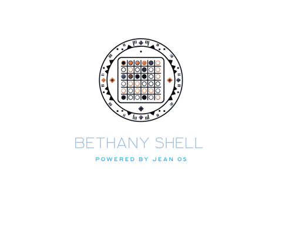

AI Detection & Response · Powered by Jean OS
Security that never leaves your building.
Enterprise-grade defense on a box you own — 92.3% APT-class block rate, zero false positives, roughly one nanosecond per check. The light that stays steady while the storm rolls through.
What it is
You've been sold this three times.
Three separate products, three separate bills, three separate vendors who each hold a piece of your security — and a piece of your data.
- The detection tool that pages you at 2 a.m. — and leaves you to figure out what it means.
- The analyst service that reads your data to defend it — from their cloud, not your building.
- The AI assistant nobody in the building actually trusts — because it lives somewhere else.
They were never supposed to be three.
BethanyShell is one. One mind. One box.
The problem
Companies overpay to outsource security — and still don't own their data.
The current model asks you to send your most sensitive data somewhere else, pay a premium for the privilege, and trust that the vendor never gets breached. When they do, your data goes with them.
The proof — red-team results, unedited
Don't take our word for it. Run the tests yourself.
These are real results from industry-standard adversarial emulation — Caldera, Garak, PyRIT. Every number is documented, reproducible, and published in a public repository.
Verified via CALDERA nation-state emulation under Software-in-the-Loop methodology. Three-run identical outcome — deterministic, not probabilistic. Full run data in the methodology report.
Speed is the security
Anyone can be breached. We make it not worth their time.
Why it's hard to copy
Three layers. Copy two. Never all three.
We translated how the mind turns chaos into meaning — into math. That mathematics, compiled native, running on a biologically-inspired architecture, is a moat a giant can't cross by writing a check.
The formulas
Dozens of in-house mathematical formulas — named for Black pioneers in science and mathematics — that find the attack hiding in ordinary-looking noise. A competitor can copy a formula. They can't copy the discipline that produced dozens of them.
Native Rust
The whole engine compiled to run local — memory-safe, deterministic, fast enough to check in a nanosecond. Not a cloud service with a local wrapper. The real thing, on your hardware.
The brain
A biologically-inspired architecture of specialized regions — the structure that lets one engine reason across security, medicine, and education without being rebuilt for each.
Your data, your system, your company — on your terms.
The math
Twice as capable. Half of what you pay now.
What you pay today
The fragmented stack
per year · 200-seat firm · $50–80/user/mo
- Detection, analysis, and response billed separately
- Your data leaves the building to be defended
- Per-seat, per-endpoint costs that grow with you
- Breached vendor means your data is breached too
BethanyShell
One box. One bill.
recurring per year · replaces the stack above
- Detection, analysis, and response — one engine
- Your data never leaves your building
- Flat cost — near-zero marginal compute
- Nothing to breach off-site because nothing leaves
How it's priced
BethanyShell lands as an appliance — $40K up front (or $20K leased) plus $25 per seat per month. The box plus the seats replaces a $120–192K annual stack, so year one already costs less than what you pay now. The hardware bill rolls off over time, and the on-device AI colleague already sitting on the box becomes a near-zero-cost upgrade.
Verify anything
The repository is public. Run every test yourself.
We don't ask you to trust a number on a slide. The full evaluation suite, methodology, and SIL environment are open-source and reproducible — clone it and run the red-team emulation on your own machine. Every result on this page is verifiable. That's the whole point.
Repo access and full run instructions are included with the methodology report below.
# Clone the public BETHANY evaluation suite $ git clone https://github.com/AyindeRudolph/bethany-sil $ cd bethany-sil # Run the full Software-in-the-Loop evaluation $ cargo test # Reproduce the red-team results — CALDERA emulation $ cargo test --test sil_run
See it work
BethanyShell, in motion.
A walkthrough of the engine — how it reads a threat, reasons about it, and responds, all on the box, in real time.
Two ways forward
See the full picture, or start a conversation.
The methodology report
Every number, every method, the full run data.
The complete methodology report — red-team results, SIL run data, reproducibility instructions, and public repo access. Free — we just ask who you are.
Get the methodology reportOpens in DocSend · quick email registration · includes repo access instructions
Talk to us
Tell us your environment. We'll tell you if it fits.
Questions about deployment, seat count, air-gapped configuration, or whether BethanyShell fits your stack? Write to us directly — no sales process, no auto-responder.
Write to uscontactus@myasolutions.org · we respond personally
Evaluating BethanyShell as an investment? The go-to-market, unit economics and five-run validation data are in the investor briefing.
Investor briefing